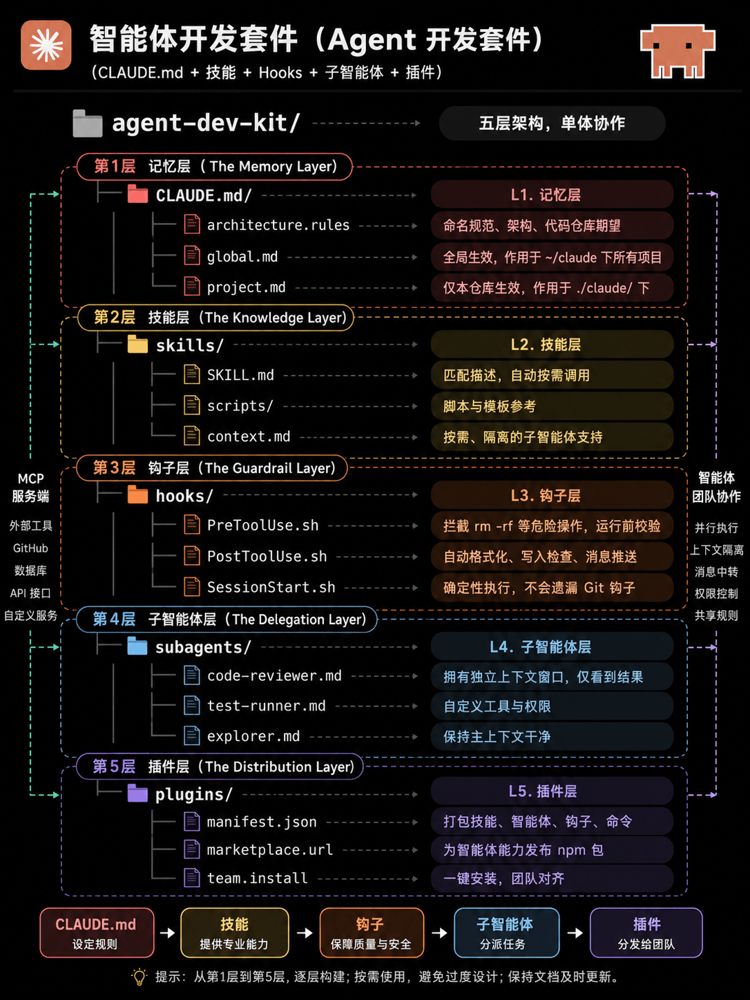

Claude Code 开发配置
你有没有遇到过这些情况？
- 每次打开新会话，又要跟 Claude 重新解释一遍我们项目的命名规范
- Claude 突然跑去执行了一条危险命令，比如删文件
- 让 Claude 做代码审查，结果它把整个项目都塞进上下文，又慢又贵
- 你精心调教出来的一套 Claude 用法，新同事完全不知道怎么复用
这些问题，都可以用一套叫做 Agent Development Kit（ADK，智能体开发套件） 的结构来解决。
它的核心就是 5 个文件夹，通过这 5 个文件夹我们可以把 Claude Code 变成一支有记忆、懂规矩、会分工、能复制的自动化开发团队。
整体结构：
你的项目/ ├── CLAUDE.md/ ← 第一层：记忆 ├── skills/ ← 第二层：知识 ├── hooks/ ← 第三层：护栏 ├── subagents/ ← 第四层：分工 └── plugins/ ← 第五层：复制

| 层级 | 目录 / 文件 | 作用 | 核心意义 | 类比理解 |
|---|---|---|---|---|
| 第1层 | CLAUDE.md/ |
智能体的全局规则与记忆中心 | 定义 AI 的行为规范、项目背景、开发约束 | AI 项目操作手册 |
architecture.rules |
架构规则定义 | 规定代码结构、命名规范、目录设计 | 技术团队编码规范 | |
global.md |
全局共享记忆 | 所有项目都生效的长期规则 | AI 的长期记忆 | |
project.md |
当前项目专属记忆 | 当前仓库的业务背景、特殊要求 | 项目 README 的增强版 | |
| 第2层 | skills/ |
技能模块目录 | 给 AI 注入专业能力 | AI 的技能库 |
SKILL.md |
技能描述文件 | 告诉 AI 什么情况下调用该技能 | 技能说明书 | |
scripts/ |
技能脚本目录 | 存放自动化脚本与模板 | 工具箱 | |
context.md |
技能上下文 | 提供技能运行时需要的背景知识 | 专业知识库 | |
| 第3层 | hooks/ |
Hook 钩子系统 | 在执行前后自动插入检查逻辑 | 自动安全审计 |
PreToolUse.sh |
工具执行前钩子 | 执行命令前做校验 | "危险操作确认器" | |
PostToolUse.sh |
工具执行后钩子 | 执行完成后自动处理 | 自动格式化、通知 | |
SessionStart.sh |
会话启动钩子 | 初始化开发环境 | IDE 启动脚本 | |
| 第4层 | subagents/ |
子智能体目录 | 拆分不同专业 Agent | AI 团队协作系统 |
code-reviewer.md |
代码审查 Agent | 专门负责代码 Review | Reviewer 工程师 | |
test-runner.md |
测试 Agent | 自动运行测试 | QA 测试工程师 | |
explorer.md |
探索型 Agent | 分析代码库结构 | 技术调研员 | |
| 第5层 | plugins/ |
插件系统 | 将能力模块化分发 | AI 应用市场 |
manifest.json |
插件配置清单 | 定义插件元数据 | npm package.json | |
marketplace.url |
插件市场地址 | 插件下载与共享入口 | 应用商店 | |
team.install |
团队安装脚本 | 一键同步团队环境 | DevOps 初始化脚本 |
每一层解决一个具体问题，下面逐一拆解。
第一层：CLAUDE.md — 给 Claude 装一块长期记忆
问题是什么？
Claude 没有跨会话记忆。你今天告诉它组件命名用大驼峰，明天开新会话它就忘了。
解决方案
在项目里放一个 CLAUDE.md 文件，把所有不想重复说的事写进去。每次会话开始，Claude 自动读取它。
两个文件，两个作用范围：
| 文件位置 | 作用范围 |
|---|---|
~/.claude/CLAUDE.md |
你电脑上的所有项目都生效 |
项目根目录 .claude/CLAUDE.md |
只对这一个仓库生效 |
写什么进去？想想你最常对 Claude 重复说的话：
# 项目：我的电商平台 ## 技术栈 - 前端：Next.js 14（App Router） - 样式：Tailwind CSS - 数据库：PostgreSQL + Prisma ## 命名规范 - 组件文件：大驼峰，如 `UserCard.tsx` - 工具函数：小驼峰，如 `formatPrice.ts` - API 路由：短横线，如 `/api/user-profile` ## 注意事项 - 禁止使用 `any` 类型 - 所有异步函数必须有 try/catch - 提交代码前必须通过 ESLint 检查 - 不要直接操作 `main` 分支 ## 代码风格 - 缩进：2 个空格 - 引号：单引号 - 函数优先用箭头函数
效果： 你再也不用在每次对话开头粘贴一大段背景介绍了。
第二层：skills/ — 把你的经验存起来
问题是什么？
你每次让 Claude 帮我写一个新组件，它可能每次做法都不一样——有时候加测试，有时候不加，有时候有 TypeScript 类型，有时候没有。
解决方案
把标准做法写成技能文件放进 skills/ 目录，Claude 会根据你的任务描述，自动匹配并调用对应的技能，你不需要输入任何命令。
目录结构：
skills/ ├── SKILL.md ← 技能索引（描述 + 触发条件） ├── create-component.md ← 创建 React 组件的标准流程 ├── write-api.md ← 写接口的标准流程 └── fix-bug.md ← 排查 Bug 的标准流程
一个技能文件长什么样？
---
name: create-react-component
description: >
当用户说"创建组件"、"新建页面"、"写一个 UI"时，
自动调用此技能。
---
# 创建 React 组件的标准流程
## 步骤
1. 检查 `src/components/` 下是否已存在同名组件
2. 用大驼峰命名新建 `.tsx` 文件
3. 必须定义 TypeScript interface，不允许 any
4. 同步在 `src/stories/` 下新建对应的 Storybook 故事
5. 在 `__tests__/` 下新建单元测试文件
## 代码模板
\`\`\`tsx
interface Props {
// 在这里定义 props
}
export const ComponentName: React.FC<Props> = ({ }) => {
return <div>{/* 内容 */}</div>;
};
\`\`\`
效果： 你说帮我创建一个用户卡片组件，Claude 自动按照你团队的标准流程来做，测试、类型、文档一个不漏。
💡 通俗理解： 这就像给一个新员工写了一本《操作手册》，它照着手册做事，不需要你每次盯着。
第三层：hooks/ — 设一道不可绕过的护栏
问题是什么？
AI 有时候会做出一些你绝对不想要的操作——比如在生产环境直接删数据库，或者跑了一条 rm -rf 命令。这种事情靠在提示词里说不要这样做是不可靠的。
解决方案
Hooks 是在 Claude 每次工具调用前后自动运行的 Shell 脚本。它是纯代码逻辑，确定性执行，AI 绕不过去。
三个核心文件：
hooks/ ├── PreToolUse.sh ← 工具调用「之前」运行 ├── PostToolUse.sh ← 工具调用「之后」运行 └── SessionStart.sh ← 会话「开始时」运行
PreToolUse.sh 示例 — 拦截危险命令：
#!/bin/bash # 检查 Claude 准备执行的命令 TOOL_INPUT="$2" # 禁止执行 rm -rf / if echo "$TOOL_INPUT" | grep -qE "rm\s+-rf\s+/"; then echo "已拦截：禁止执行破坏性删除命令" >&2 exit 1 fi # 禁止在没有确认的情况下操作生产数据库 if echo "$TOOL_INPUT" | grep -q "prod_db" && echo "$TOOL_INPUT" | grep -qE "DROP|DELETE"; then echo "已拦截：生产数据库的破坏性操作需要人工确认" >&2 exit 1 fi exit 0
PostToolUse.sh 示例 — 保存文件后自动格式化：
#!/bin/bash
# 每次 Claude 写完文件，自动跑 lint 和格式化
TOOL_NAME="$1"
FILE_PATH="$2"
if [ "$TOOL_NAME" = "write_file" ]; then
case "$FILE_PATH" in
*.ts|*.tsx|*.js|*.jsx)
npx eslint --fix "$FILE_PATH"
npx prettier --write "$FILE_PATH"
echo "已自动格式化：$FILE_PATH"
;;
esac
fi
效果：
- Claude 写完代码，自动帮你 lint，不用你手动跑
- 危险命令在执行前就被拦截，你连看都不用看
- 部署脚本跑完，自动发 Slack 通知给团队
💡 通俗理解： 就像工厂流水线上的质检环节。产品出厂前强制过一遍，不符合规格的直接挡回去，不依赖工人的个人判断。
第四层：subagents/ — 让专门的人做专门的事
问题是什么？
让 Claude 在一个会话里同时做"代码审查 + 跑测试 + 写文档"，上下文会越来越大，越来越慢，而且各种任务互相干扰。
解决方案
把不同任务拆分给独立的子代理。每个子代理有自己独立的上下文窗口、专属的工具权限，只做一件事，做完汇报结果。
目录结构：
subagents/ ├── code-reviewer.md ← 专门做代码审查 ├── test-runner.md ← 专门跑测试 └── doc-writer.md ← 专门写文档
code-reviewer.md 示例：
--- name: code-reviewer description: PR 需要代码审查时调用此代理 tools: - read_file # 只允许读文件 permissions: - read_only # 只读权限，绝对不会误操作 --- # 代码审查专用代理 你是一名资深代码审查员。你只会收到 git diff，不需要了解整个项目。 你没有写入权限，只能阅读和分析。 ## 审查清单 - [ ] 有没有硬编码的密钥或密码？ - [ ] 新函数有没有对应的单元测试？ - [ ] TypeScript 类型是否明确，有没有 any？ - [ ] 异步操作有没有错误处理？ - [ ] 有没有遗留的 console.log？ ## 输出格式 1. **总体评价**：一句话说清楚 2. **必须修改**：阻塞合并的问题 3. **建议优化**：非阻塞的改进项 4. **结论**：可以合并 / 需要修改
整体运作流程：
你说："帮我审查这个 PR 并运行测试"
│
├──→ 调用 code-reviewer 子代理
│ 独立上下文，只看 diff，只读权限
│ 返回：结构化审查报告
│
├──→ 调用 test-runner 子代理
│ 独立上下文，有执行测试的权限
│ 返回：测试通过/失败摘要
│
└──→ 主会话汇总结果，上下文始终保持干净
💡 通俗理解： 就像一个包工头。他自己不撸代码，但他手下有专门的水电工、瓦工、木工。谁的活儿谁干，互不干扰，最后包工头统一汇报进度。
第五层：plugins/ — 一键复制给全团队
问题是什么？
你花了好几天把以上四层全部调教好了，但新同事入职，他怎么知道这套配置？难道要让他再配置一遍？
解决方案
把整套系统打包成一个插件，新成员执行一条命令，立刻拥有和你完全相同的 Claude Code 工作环境。
目录结构：
plugins/ ├── manifest.json ← 描述插件包含什么 ├── marketplace.url ← 分享链接 └── team.install ← 一键安装脚本
team.install 示例：
#!/bin/bash echo "🚀 正在安装团队 ADK 配置..." # 安装项目级 CLAUDE.md cp ./CLAUDE.md/project.md ./.claude/CLAUDE.md # 安装所有技能 mkdir -p ./.claude/skills && cp -r ./skills/* ./.claude/skills/ # 安装钩子（记得加执行权限） mkdir -p ./.claude/hooks && cp -r ./hooks/* ./.claude/hooks/ chmod +x ./.claude/hooks/*.sh # 安装子代理 mkdir -p ./.claude/subagents && cp -r ./subagents/* ./.claude/subagents/ echo "安装完成！Claude Code 已配置为团队模式。"
新同事入职第一天：
bash plugins/team.install
完毕。和你用的是完全一样的 Claude Code。
💡 通俗理解： 就像公司的"新员工电脑配置包"。IT 部门做好一个镜像，新人一键安装，环境和老员工一模一样，不用挨个手动配。
完整流程图：5 层如何协同工作
开发者输入任务
│
▼
CLAUDE.md → 加载项目规范和背景知识
│
▼
skills/ → 匹配任务类型，调用对应工作流
│
▼
hooks/PreToolUse → 执行前检查，拦截危险操作
│
▼
subagents/ → 复杂任务拆分给专属子代理执行
│
▼
hooks/PostToolUse→ 执行后处理，自动格式化/通知
│
▼
plugins/ → 整套配置一键同步给所有团队成员
5 层对应解决的问题汇总
| 层级 | 文件夹 | 解决什么问题 | 类比 |
|---|---|---|---|
| 第一层 | CLAUDE.md/ |
Claude 每次都忘记项目规范 | 员工手册 |
| 第二层 | skills/ |
同类任务每次做法不一致 | 操作手册 |
| 第三层 | hooks/ |
危险操作无法防范 | 流水线质检 |
| 第四层 | subagents/ |
复杂任务上下文膨胀 | 专业分工 |
| 第五层 | plugins/ |
配置无法在团队复用 | 新人入职包 |
快速上手：今天就能做的 3 件事
如果你觉得一次全部配置太复杂，可以先从最高回报的开始：
第 1 步（5 分钟）： 建一个 CLAUDE.md，把你最常跟 Claude 重复说的项目背景都写进去。
第 2 步（10 分钟）： 建一个 hooks/PreToolUse.sh，加入几条你最不想 Claude 执行的危险命令的拦截规则。
第 3 步（30 分钟）： 把你最常做的一类任务（比如"创建组件"）写成第一个 skills/ 文件，积累你的团队标准。
剩下的层可以边用边补，不需要一次做完。
这套系统的名字叫 Agent Development Kit（ADK）。五层结构，一个堆栈。
你不需要更多工具，只需要 5 个文件夹。

点我分享笔记